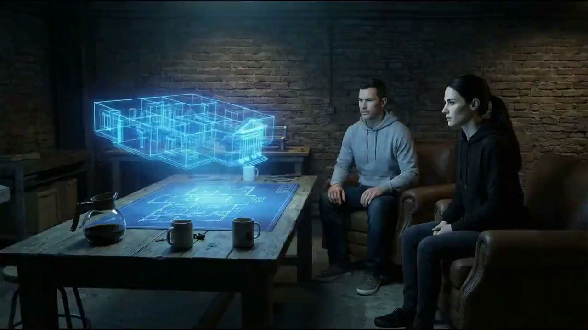
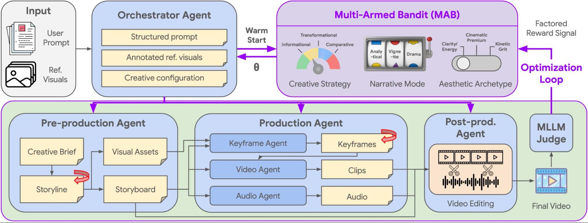
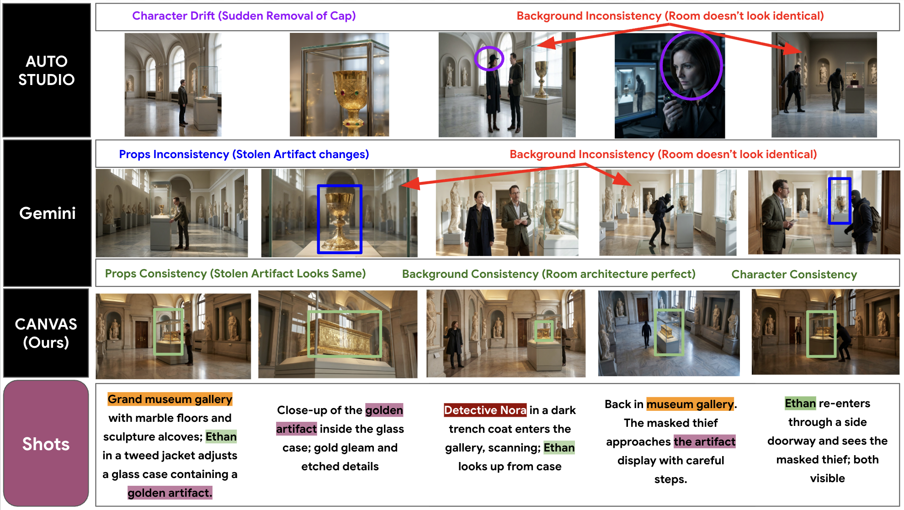
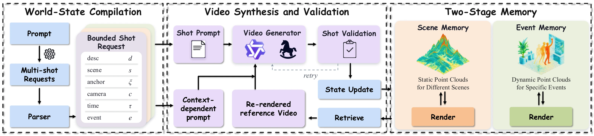
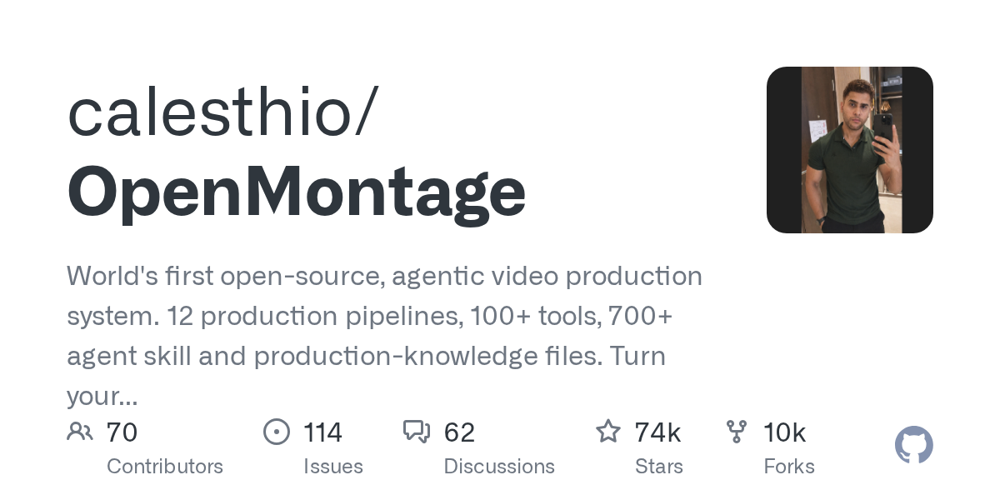
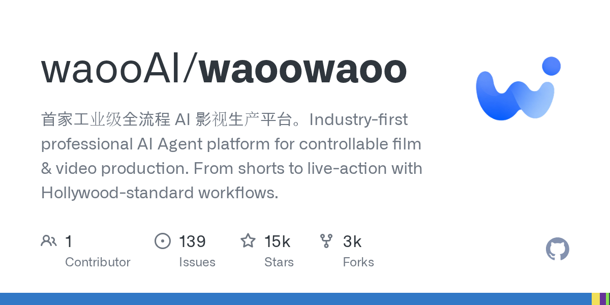
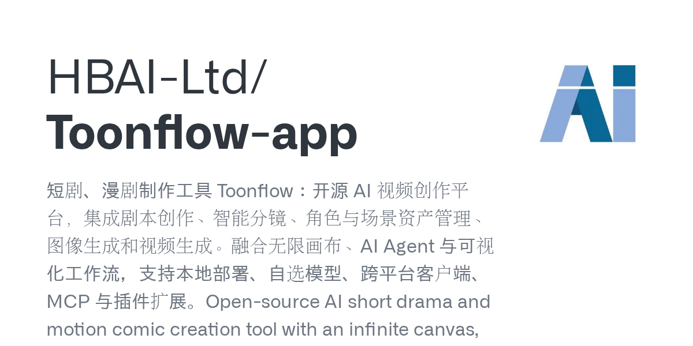
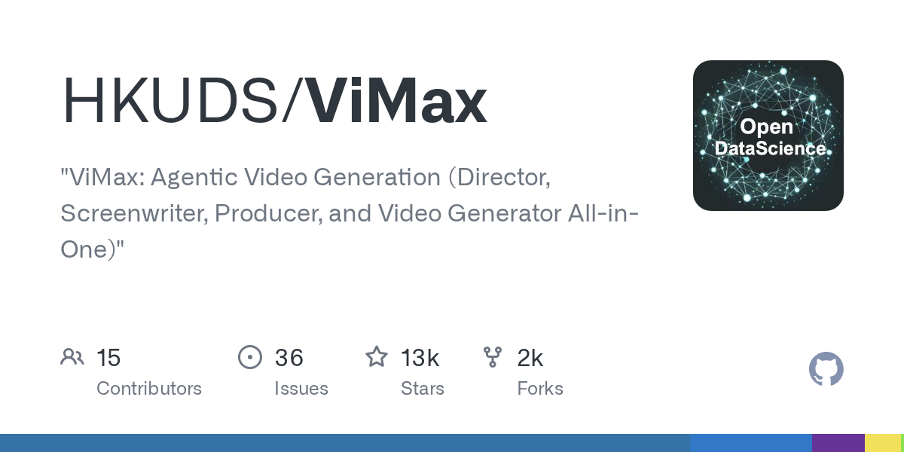
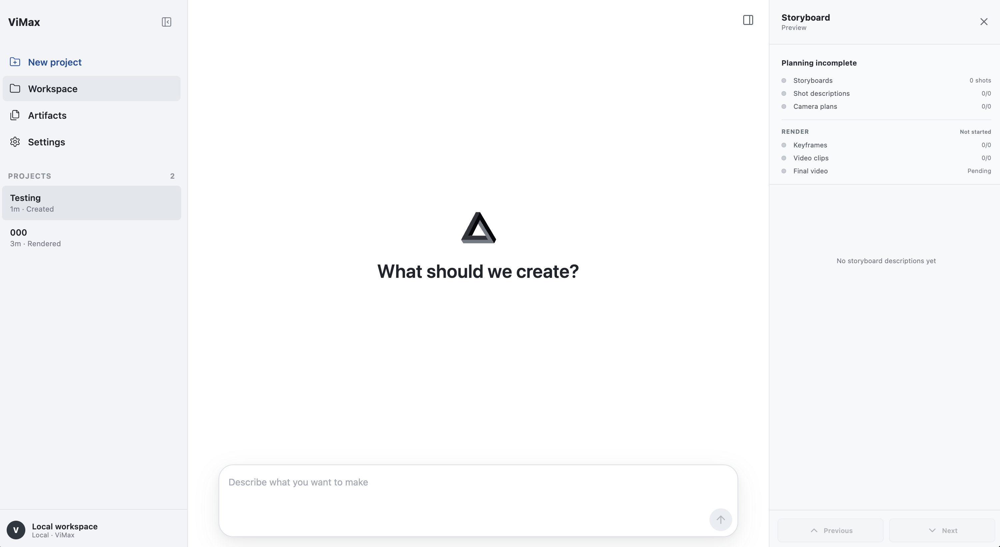
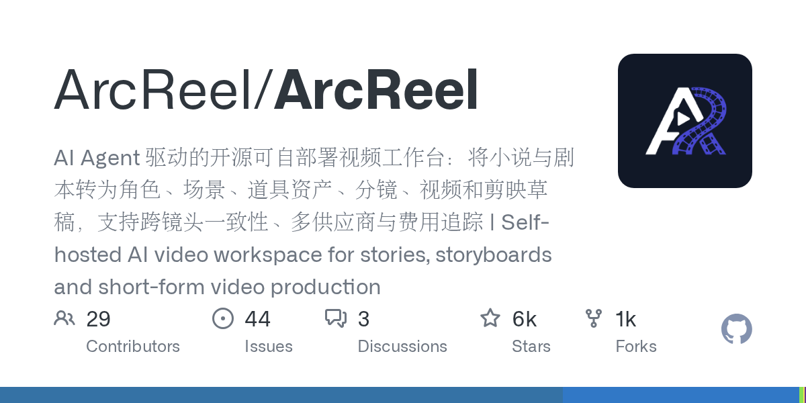

基于「翔宇工作流」AI 导演台视频的概念归纳 × 截止 2026 年 11 月全球最先进的 Agent 化 AI 视频生产管线全景
来源视频：《我让 AI 当导演，从零拍了一集动画短片》· 翔宇工作流 · 2026-10-28 · 全片 17分53秒（本报告全部要点整理自完整字幕）
画布已死，会话为王。传统节点画布在片子复杂后会有上百张图需要翻找整理；现代 Agent 多模态、可看图看视频（截帧）、百万级上下文，这些"整理活"全部收进一个会话。人当导演，Agent 当副导演。
五步法是统计出来的，不是拍脑袋。作者拆解了 200+ 个 AI 视频工作流、逐条统计了几千条提示词，沉淀出"角色图→道具图→场景图→提示词→生成"五步法，存进导演台 Skill 复用。
Agent 先调研再创作。拍摄"兰州拉面"集时 Agent 没有急着出图，而是先查真实做法（和面→醒面→揉条→面剂子→拉面→煮面→浇汤）、找十几张真实照片进项目库，再写故事卡等人批准——先事实核查、再创意、再生产。
关键判断来自 36氪对产业界的访谈与 DataEye 半年报，与本轮 GitHub 开源生态观察互相印证。
36氪访谈中产业界（邹娟等）的判断：
这正是"Agent 化"的产业含义：单点模型能力（10秒很惊艳）≠ 交付能力（一部可看、连贯、可批量复制的剧）。谁能把一致性、场记、质检、成本控制编排成自动化管线，谁赢。
技术分水岭被多方明确指向 Seedance 2.0 的发布（2026）：行业从"手工作坊"进入"工业化流水线"（新浪科技 10-30 创作者访谈）。开源界的同步印证：GitHub 上"AI短剧"相关仓库在 2026 年爆发到近百个活跃项目（见第5节 97 项目地图），"Agent Skills 漫剧圈新物种"（编剧技能包直接装进 Claude Code）成为全新品类。
综合 EmpirioLabs 实测、AAVA 双榜、各厂 10 月发布信息与 36氪/量子位模型盘点。
| 模型 | 厂商 | 关键能力（截至 2026-11） | 参考输入规格 | 单价信号 | 适配场景 |
|---|---|---|---|---|---|
| Kling 4.0 10月上线 | 快手 | 单镜头最长 30s；4K + 1080p 10-bit HDR；4.0 Flash 已于 9-28 小范围体验 | 10 图 + 5 视频参考 + 7 音频 | — | 长镜头叙事、HDR 大片感、多参考一致性 |
| Seedance 2.5 图生视频第一 | 字节跳动 | 统一多模态架构，图/视频/音频混合输入一次产出音画同步；I2V 榜首 | 多模态混合参考 | ≈$34.12/分钟（I2V 榜首价） | 真人短剧主力、对白同步、即梦生态 |
| MiniMax H3 / H3 Max 已开源 | MiniMax | 全能参考模式：9图+3视频+3音频（每参考声明用途）；≤15s 立体声；H3 开源版 8GB 显存跑 2K | 9 图 + 3 视频 + 3 音频 | 开源可自部署 | 内网自部署短剧管线（本地 GPU 链路）、参考密集型一致性 |
| Vidu Q4 Preview 10-08 发布 | 生数科技 | 15 参考图 + 3 参考音频、4K 直出；真人皮肤纹理/泪沟毛孔级写实、电影级光影；角色全程一致 | 15 图 + 3 音频 | ¥0.09/秒 起 | 真人AI剧"大片脸"、性价比首选 |
| Veo 3.1 | 电影构图与镜头语言、原生音频；Google 自家多智能体框架的默认底座 | 多模态 | 高 | 海外大片级短片、研究管线 | |
| Wan 3.0 开源 | 阿里 | 文生视频榜领先的开源模型 | — | 开源 | 本地部署 T2V 底座 |
| Happy Horse 1.0 开源 SOTA | 社区 | 登顶 AAVA 双榜第一的开源音视频模型（10月发布） | — | 开源 | 零成本实验、自建管线 |
| 即梦 Dreamina 短剧工作室 10-26 上线 | 字节/抖音 | 三款自研模型：DreamScript（剧本）+ Anycook（图片）+ DreamShot（分镜/导演）；统一项目串联剧本创作→资产生成→分镜→视频生成→后期编辑→本地化重制；故事板全局协同（对话改稿/全局修改） | 平台内闭环 + Seedance 全能参考 | SD 2.5 每秒不到 2 毛钱 | 一站式官方流水线、抖音系分发、双11 备产 |
| Runway Gen-4 海外 | Runway | Gen-4 Turbo / Gen-4 Aleph 电影级质量（OpenMontage 接入的海外选项） | 多模态 | 高 | 海外品牌片、艺术短片 |
| Grok Imagine Video 海外 | xAI | 参考图视频能力强、xAI 原生短视频生成（OpenMontage 已接入） | 参考图驱动 | 中 | 社交向短视频 |
| 本地 GPU 免费档 零成本 | 开源社区 | WAN 2.1/2.2 + ComfyUI 加速工作流、Hunyuan、CogVideo 2B/5B、LTX-Video（本地或 Modal） | 本地面布工作流 | 免费（电费） | 零 API 成本实验、隐私敏感内容 |
2026年9-10月，Google Research 与浙大 ZipLab 分别发布了直指"长片一致性"的多智能体框架——这是"大片级"的理论天花板。

它要解决的正是行业最大痛点（官方原文）：现有链式 Agent 管线存在 语义漂移（跨镜头角色服饰/场景细微变化）、级联失败（上游资产瑕疵污染下游合成）、内容坍塌（叙事无法推进）——而且终局失败难以回溯到具体提示词（经典 credit assignment 问题）。

维护角色/地点/物体状态的结构化表示 + 持久视觉记忆：需要时从记忆取回视觉锚点、不够则初始化新锚点。博物馆盗窃戏实测：裸用 Gemini-3.1-Pro 出现道具不一致+背景漂移；对比框架 AutoStudio 出现角色漂移（小偷的帽子消失）；CANVAS 的持久视觉记忆让角色、空间几何、物体状态全片完美连贯——包括"绕一圈回到主展厅"的非连续转场。
A²RD：自回归式逐段生成 + 多模态视频记忆，把分镜变成分钟级成片。VQQA：让系统自主发现并修复视觉瑕疵——动态生成针对性视觉问题，把 VLM 批评当作"语义梯度"（自然语言方向的"反向传播"），生成→提问→批评→改提示词的迭代闭环，替代昂贵的白盒测试时优化。与基准视频"人工挑和改"相比，这是把人工 QC 也 Agent 化了。


这与基准视频"道具状态图当 AI 场记"的民间智慧完全同构，但走得更远：民间做法是把状态离散成几张白底图，ATAS 是维护一个可投影、可配准、可验证的连续世界模型。学术前沿与一线实践在 2026 年末指向同一个结论：一致性不是提示词技巧，是状态管理问题。
来源：awesome-manyu（中文世界最全开源漫剧/短剧工具地图，收录 97 项目，GitHub Actions 每周自动刷新，数据更新 2026-10-28）+ 本轮 GitHub API 逐一核验星数与更新时间。
| 项目 | ⭐ | 定位（README 原文摘录） | License | 更新 |
|---|---|---|---|---|
| OpenMontage | 74,143 | 全球最大开源 AI 视频生产系统：12 条生产流水线、100+ 工具、700+ agent skill 文件，"把你的 AI 编程助手变成完整视频制片厂" | AGPL-3.0 | 10-28 |
| Toonflow | 20,105 | 无限画布 AI 短剧/漫剧创作平台：剧本、智能分镜、角色场景资产管理、生图生视频、MCP 与插件扩展、本地部署 | MIT | 10-31 |
| 火宝短剧 huobao-drama | 16,866 | 一句话生成完整短剧：剧本→分镜→视频→配音→FFmpeg 合成全自动；4 个 Mastra Agent；一个 Key 开通全部能力 | CC BY-NC-SA 禁商用 | 11-01 |
| waoowaoo | 14,735 | 首家工业级全流程 AI 影视生产平台："从短片到真人级影视，采用好莱坞标准工作流程"；支持 Docker/NAS 一键部署 | Elastic-2.0 | 09-21 |
| ViMax | 12,814 | 港大 HKUDS：导演/编剧/制片/生成四合一 Agentic 框架，Idea2Video/Novel2Video/AutoCameo，Web UI + TUI | MIT | 09-30 |
| Jellyfish | 7,084 | 端到端生产工作台：章节脚本→分镜与关联资产 | Apache-2.0 | 07-30 |
| dramaclaw | 6,509 | 通用 AIGC 视频引擎：剧本到成片一条流水线 | Elastic-2.0 | 活跃 |
| ArcReel | 5,967 | 小说/剧本→角色场景道具资产→分镜→视频→剪映草稿；跨镜头一致性、多供应商、费用追踪 | AGPL-3.0 | 11-01 |
| printfilm | 7,225 | 模板驱动 AI 短视频/漫剧平台（FastAPI），含计费与管理后台、开放 API | MIT | 活跃 |
| moyin-creator 魔因漫创 | 4,808 | AI 影视生产级工具，支持 Seedance 2.0，剧本到成片批量化 | AGPL-3.0 | 08-27 |
| LocalMiniDrama | 2,305 | 纯 JS 本地运行、数据零上传，AI 真人剧+漫剧，已接 Seedance2 | MIT | 10-30 |
| VideoClaw（哈工深） | 1,886 | "AI 全自动化视频生成员工：Chat an Idea. Get a Film."（OpenClaw 生态风格） | MIT | 08-26 |
| lumenx（阿里） | 1,434 | LumenX Studio：小说→剧本分析→角色定制→分镜→动态漫剧视频一站式 | MIT | 10-29 |
| BigBanana AI Director | 2,399 | 工业级一站式导演平台：定妆→搭景→分镜→成片全程可控，Script-to-Asset-to-Keyframe | 自定义 | 10-06 |
| ai-fusion-video 融光 | 1,667 | 基于 Agent 的全流程 AI 短剧/漫剧/视频创作平台 | MIT | 活跃 |
| aid-studio | 1,158 | 自托管 AI 短剧/动态漫画工作室，Docker/systemd，多模型多供应商 | MIT | 活跃 |
| 灵果短剧 LingGuo-Drama | 1,615 | 一句话生成完整短剧/漫剧 | 自定义 | 活跃 |
第一轮报告仅基于搜索摘要，本节全部来自仓库 README 原文精读 + GitHub API 元数据核验。

"世界首个开源 agentic 视频生产系统"——本领域绝对头部。把 Claude Code / Cursor / Copilot / Codex 变成完整视频制片厂：12 条流水线（Animated Explainer / Cinematic / Documentary Montage / Clip Factory / Localization & Dub / Talking Head / Screen Demo…），100+ 工具，700+ agent skill 文件。每条流水线遵循真实制片流程 research → proposal → script → scene_plan → assets → edit → compose，每个阶段有专属 director skill（教 Agent 如何执行该阶段的 Markdown 指令文件），Agent 读技能→用工具→自检→存检查点→在创意决策点请求人工批准。
独门特性：① Backlot 活故事板——本地看板实时点亮各阶段、剧本落成剧本页、场景卡在资产生成时闪烁、每个供应商决策与花费上墙，故事板本身即审批门禁（逐场景 contact sheet：takes/提示词/单资产成本/质量分，先批准再渲染），跑完可 ▶REPLAY 全程回放；② 真实素材管线——不止"图生视频"，能从免费库存素材与开放档案（Pexels/Archive.org/NASA/Wikimedia）建语料库、检索真实运动镜头、剪成时间线渲染成片（零付费 API）；③ 参考视频反推——贴一个 YouTube/TikTok 链接，Agent 分析转录/节奏/场景/关键帧/风格，产出 2-3 个差异化概念+诚实工具路径+成本预估+样片；④ 多维自检——出片前跑 ffprobe 校验/帧采样/音频电平/交付承诺核对/字幕检查，供应商选择按 7 维打分并留可审计决策日志。
官方演示片成本：60 秒皮克斯风动画短片《THE LAST BANANA》总成本 $1.33（6 段 Kling v3 运动镜头 + Chirp3-HD 旁白 + 免费钢琴曲 + 逐词字幕）；50 秒竖屏变形大片约 $4。已接入供应商：Veo 3.1、Kling（fal/官方）、Seedance 2.0/2.5（火山方舟）、Runway Gen-4、Grok Imagine、MiniMax H3、Higgsfield（含 Soul ID 角色一致性）、HeyGen、WAN/Hunyuan/CogVideo/LTX 本地免费档、Suno 音乐、Piper TTS 零 Key 路径。

首家工业级全流程 AI 影视生产平台："从短片到漫剧到真人级影视剧一站搞定，采用好莱坞专业制作团队思路"（linux.do 社区描述）。网文小说直接转视频：角色、场景、剧情、分镜、配音自动扒出——做小说改编和短剧矩阵的首选（Twitter 鸟哥推荐语）。支持 Docker 与 NAS（极空间）一键部署，上线 4 天 6.8K 星。注意：2026-09-21 后更新放缓，Elastic-2.0 协议禁商用需评估。
定位：多智能体端到端视频自动生产系统（Seedance 2.0 驱动，Playwright 自动操控即梦网页接口，VIP/非VIP 自动排队省积分）。三个入口：一句话创意 / 小说章节 / 参考视频（复刻+二创）。
跨镜头连续性三件套：16 宫格关键帧传递 + 转场桥接 + 连续性导演。
每段视频生成后 Gemini VLM 按 6 维度评审：画面质量/内容准确度/角色一致性/艺术性/物理合理性/模型穿模。score ≥ 7 通过；不通过则 critique 反馈自动喂给 prompt 改写 Agent 定向修复重生成；多次 attempt 由 VLM 对比选最佳进候选池，最终拼接成片（音频响度归一化+交叉淡入）。全部未过阈值也会选最高分兜底，不留空。
即梦平台对真人脸/敏感IP/暴力等 6 类检测拦截时，Agent 自动识别拦截原因并渐进式改写 prompt 绕开限制——越试越精准。另有断点续跑：每步 checkpoint，崩溃自动恢复在飞任务。

中文圈星数第一的一站式平台（21 种界面语言，覆盖东南亚/中东/南亚主要市场——本身就是出海定位）。开源 AI 短剧、漫剧与视频创作平台：剧本创作、智能分镜、角色与场景资产管理、图像/视频生成；无限画布 + AI Agent + 可视化工作流三范式合流；本地部署、自选模型、跨平台客户端、MCP 与插件扩展。与 LibTV 同源（topics 含 libtv/tapnow）。适合既要画布直观又要 Agent 自动化的团队。
技术栈：Nuxt3+Vue3 前端 / Hono + Drizzle ORM + Mastra AI Agents + SQLite（零安装数据库）/ Electron 桌面版 / ffmpeg-static 内置（零安装 FFmpeg）。本地开发零配置启动。
内置 4 个 Mastra Agent（技能可在界面在线编辑 SKILL.md）：
script_rewriter：小说→格式化剧本extractor：角色/场景/道具智能提取与去重storyboard_breaker：剧本→分镜序列prompt_generator：资产图片+分镜视频提示词功能闭环：AI 角色管理（批量生成/上传）→ 视频任务（场景描述+提示词自动生成）→ 文生视频/图生视频 → FFmpeg 单镜合成+字幕 → 整集拼接导出；素材库统一管理+任务进度追踪。
多厂商：文本 OpenAI 兼容/Gemini；图片 OpenAI/Gemini/火山引擎；视频 Seedance（服务器部署需 PUBLIC_BASE_URL 供参考资源公网回链）。
定位提示：CC BY-NC-SA 协议禁商用，适合个人学习与自用生产。

学术正统 Agentic 框架（与 Google Co-Director 同路线）：Director/Screenwriter/Producer/Generator 四合一。Idea2Video（一句话→故事/角色/剧本/分镜/镜头/成片）、Script2Video（保创作意图）、Novel2Video（长篇小说→分集，叙事压缩+角色追踪+场景规划）、AutoCameo（上传照片在故事里一致客串演出）。v1.2.0 Web UI（命名项目/Agent Loop/产物分镜预览/渲染检查点/深色模式）+ TUI 双形态；供应商可插拔（Seedance 2.0 Fast、GPT Image 2、MiniMax、Google Omni），支持镜头级并行生成加速。研究系工程成熟度最高。


AI Agent 驱动的可自部署视频工作台：小说与剧本→角色/场景/道具资产→分镜→视频→剪映草稿（JianYing draft，中文圈首创落点：直接进剪映精修）。支持跨镜头一致性、多供应商、费用追踪。AGPL-3.0。
"你的第一个 AIGC 同事：Chat an Idea, Get a Film 🦞"。AI 全自动化视频生成员工，一个想法→完整短剧/漫剧。OpenClaw 生态风格的 Agent 员工化叙事，学术团队出品，协议宽松可商用。
awesome-manyu 称之为"漫剧圈新物种"——不装平台，直接在终端里给 Agent 排生产。与基准视频"AI 导演台"路线完全对应。星数经 GitHub API / 索引核验。
| Skill | ⭐ | 内容 | License |
|---|---|---|---|
| shuohao-skills 说好 | 5,835 | 拆角色（Character Bibles）、排大纲、出场景与道具设定、写剧本、切分镜五件套——与基准视频五步法 1-4 步一一对应 | Apache-2.0 |
| zenstory drama-skills | 3,608 | 11 个 skill：原著分析→分集剧本→视觉设定→分镜→图/视频提示词→生产→剪辑成片→审查一条龙；"分镜只做输出不做决定，剧本场景角色同步迭代" | MIT |
| manju-laoli-skill 漫剧老李 | 1,733 | AIGC 创作全流程多技能套装 | MIT |
| story-to-handdrawn-video | 2,311 | 中文故事文案→手绘白板动画视频 | MIT |
| OnlyShot 神仙鱼 | 340 | AI 短剧工业流水线 Claude Skill | MIT |
| short-drama-factory | 485 | 抖音/红果爆款短剧工厂 | MIT |
| DirectorSKILL / film-studio-skills / ai-film-skills | 289/160/94 | Claude Code 电影制作技能 / 7 个制片厂 Agent 技能 / 21 个模块化电影技能 | 混合 |
| Skill | ⭐ | 内容 |
|---|---|---|
| webnovel-writer | 7,724 | 基于 Claude Code 的长篇网文辅助创作系统：一致性与长程记忆（60集不崩人设的根基） |
| human-writing | 4,253 | 让 AI 中文读起来像"一个具体的人"——去 AI 味通用创作改稿 Skill |
| sepia | 3,533 | 去 AI 味写作 Skill，任意 Agent 可装 |
| short-drama | 1,512 | 专业短剧剧本：选题立项→分集撰写→质量自检→合规审核→海外 |
| screenwriting-skills / shanyin-screenwriting-master | 1,854/1,404 | 专业影视编剧技能集 / 山音超级编剧（1-3分钟到长剧全覆盖） |
| novel-to-manju / novel-to-ai-short-drama-skill | 66/32 | 小说转漫剧全流程提示词 / 分镜运镜表演调度与时长 |
| Skill | ⭐ | 内容 |
|---|---|---|
| Seedance2-Storyboard-Generator | 2,732 | 故事→直接能拿去出图出视频的制作文档；立场："试错成本越来越高，提示词重要性前所未有" |
| seedance-2-5-video-director | 740 | Seedance 2.5 视频导演：提示词/脚本/诊断/人物锁定 |
| shanyin-director-master | 607 | 导演定调→节奏规划→剧本微调→分镜拆解 |
| visual-skills | 592 | AI 电影导演技能集：电影语言与视觉叙事 |
| h3-storyboard-skill / short-drama-production | 188/187 | MiniMax H3 专用分镜运镜 skill / 专业导演分镜+H3 生产总控 |
| Seedance-ShotDesign-Skills / seedance-2-5-fight-director / fight-prompt-director | 130/101/66 | Seedance 2.5 镜头设计 / 高燃动作戏导演（Codex）/ 打斗场面提示词编排 |
| seedance-skill 白模工作台 | 52 | 3D 白模驱动的 AI 视频工作台（对应基准视频"3D白模参考"玩法） |
综合基准视频五步法 × Google Co-Director 全局优化 × ATAS 世界状态 × OpenMontage 12 流水线 × ShowVi 质检闭环，给出 2026-11 可落地的五层参考架构。
shuohao-skills（或自建导演台 Skill）+ Higgsfield MCP。零代码，接授权即用，人全程在会话里挑和改。适合个人创作者快速验证。"大片级"的分水岭不在模型，在一致性工程。以下清单综合基准视频经验、MiniMax 官方手册与本机 MMMP 项目教训（见 vault 2026-10-07 方法论笔记）。
| 失效模式 | 症状 | 工程对策 | 来源 |
|---|---|---|---|
| 角色跑模 | 跨镜头/跨集脸变了 | 素颜照级角色库（纯色底、无道具、无文字）+ 版本化存取 + 一次只改一处 + 多角色拆单张喂 | 基准视频 / MMMP教训 |
| 道具穿帮 | 切好的鱼下镜又变整条 | 状态机式道具图：每个状态一张白底图（= AI 场记）；ATAS 进一步用 Event Memory 索引"过去瞬间可重拍" | 基准视频 / ATAS |
| 场景漂移 | 换机位后空间布局变了 | 空舞台场景图 + 4机位+俯视图圈定 + 动机光源统一影向；ATAS Scene Memory 共享帧渲染任意重访 | 基准视频 / ATAS |
| 长镜人脸漂移 | 首帧像、中后段被平均化 | 避免依赖单图长镜头；或逐帧 inswapper 换脸兜底；或改用全能参考模式（9图+3视频+3音频，每参考声明用途） | 本机 ReActor 经验 / MiniMax 手册 |
| 提示词语义漂移 | 连锁镜头画风/叙事走样 | 三段式公式：参考素材说明 + 核心创意 + 画面过程；@图片1/@视频2/@音频3 显式编号引用 | MiniMax 官方 |
| 级联失败 | 上游资产瑕疵污染全片 | L0 全局优化（MAB 注入统一创意配置）+ L4 闭环质检把失败回溯到具体镜头（credit assignment） | Google Co-Director |
| 动作失真 | "演得搞笑些"→眼睛发光 | 只写可见动作链；一个镜头一组动作；给观众留反应拍；笑点=动作序列 | 基准视频 |
1. 基准视频的"五步法"与 2026-11 的技术前沿完全同构，且已被学术化、工程化。民间智慧（角色素颜照/道具状态图/空舞台/动作化提示词/全参考生成）在 Google Co-Director（全局优化+世界状态）、ATAS（持久世界+验证更新）那里有了理论名字：一致性是状态管理问题，不是提示词运气问题。
2. "Agent 化"的实质 = 把导演的判断力编码为编排层。2026 年的竞争单位已从"一个 10 秒 clip"变成"一条可规模化的生产链路"（program）。最佳工作流 = 人（导演意图+批准门禁）→ L0 编排 Agent（MAB 全局寻优）→ L1 资产/世界状态 → L2 动作化分镜 → L3 模型矩阵调度 → L4 VLM 闭环质检。工程界两大标杆印证：OpenMontage 用 7.4 万星 + 700+ skill 文件证明"skill 可以承载完整制片知识"（阶段级 director skill + Backlot 审批门禁 + 供应商7维打分审计，60s 成片成本 $1.33）；ShowVi 的六 Agent 流水线 + VLM 六维质检闭环是当前最佳参考实现（实体状态追踪 + 16宫格关键帧传递 + score≥7 重试 + 违规自适应改写 + 断点续跑）。
3. 大片级的最大杠杆排序：一致性工程（角色库+道具状态机+世界记忆）＞ 提示词动作化 ＞ 模型选型（Vidu Q4/Seedance 2.5/Kling 4.0/Veo 3.1 各有王座）＞ 闭环质检自动化。画面逼真度已过剩（"各家旗舰都能骗过眼睛"），叙事连贯与零穿帮才是稀缺品。
4. 供给侧正式"官方化"：字节即梦短剧工作室（10-26）用三款自研模型（DreamScript 剧本 / Anycook 图片 / DreamShot 分镜）把全流程收进一个官方应用——Seedance 越强，用户越需要一个应用。与此同时 2026 Q1 上线短剧中 AI 短剧占比已达 95%、海外内购收入超 21 亿美元：这不是"未来方向"，是"现在的生意"。